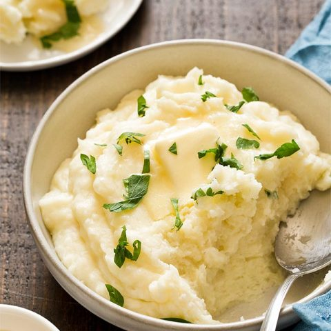

Mashed Potatoes

Potatoes that are mashed
A better alternative for rice.
easy to make, cheap and filling
Required Ingredients
Russet baking potatoes
Butter
Table salt
2% milk
Recipe Steps
- Peel potatoes
- Salt water and bring to a boil
- Add potatoes to the boiling water
- Cnce the potatoes are soft drain water begin to mash
- Add seasonign milk and butter
- Continue to mix until desired consistency